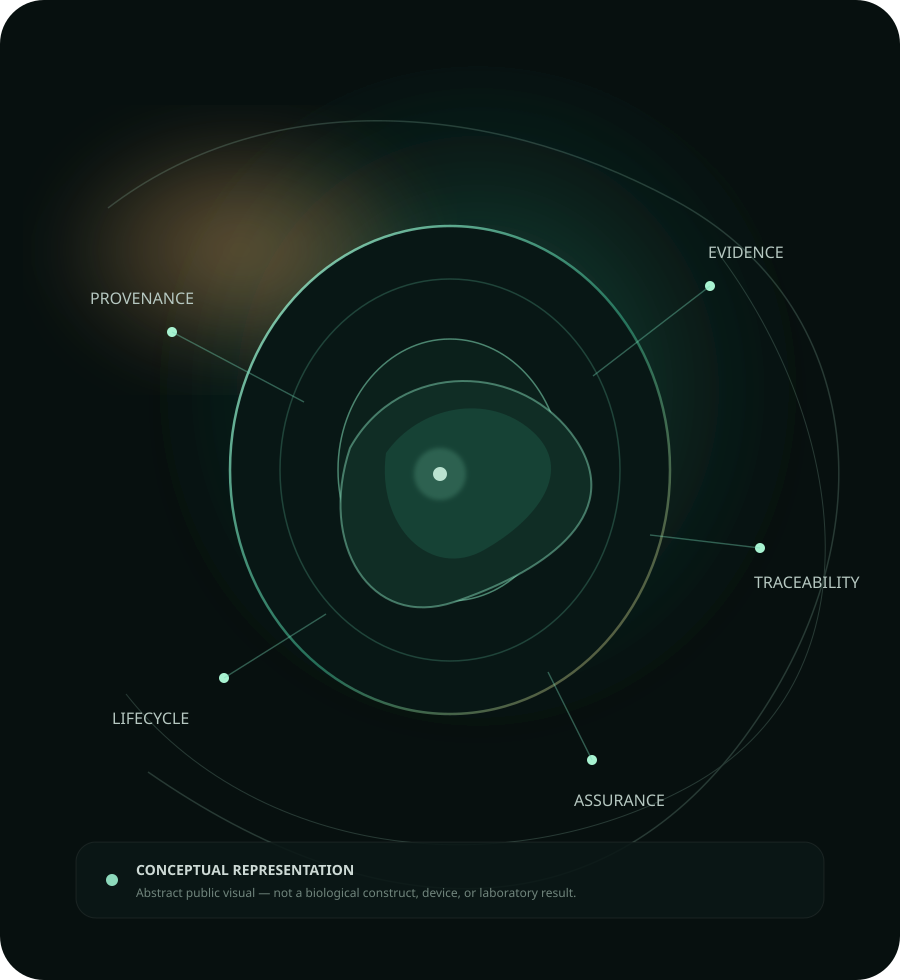

Fragmented provenance
Project identity, versions and supporting evidence can become separated over time.
An independent project by TheArchitectMax
Evidence-governed biological provenance
ISBR SecureTrace is a development-stage platform for organizing provenance, evidence, qualification records and lifecycle assurance around engineered biological assets.

01 — Overview
Biological R&D can produce fragmented records across versions, evidence artifacts, computational results and transfer events.
SecureTrace is designed to bring those records into a coherent, auditable project context without pretending that digital evidence is stronger than it actually is.
Project identity, versions and supporting evidence can become separated over time.
Computational evidence, external review and experimental validation are different evidence classes and should remain distinguishable.
Transfers, acquisitions and later evidence can lose their connection to the original asset record.
Evidence before assertion
SecureTrace is organized around a simple public principle: asset identity, evidence, decisions and lifecycle state should remain connected, attributable and reviewable.
The public site describes these capabilities at a high level. Internal implementation, proprietary logic and sensitive project material remain outside this repository.
02 — Capabilities
Public descriptions intentionally explain what the platform supports, not how proprietary internals are implemented.
Organize identity, lineage, project context and lifecycle information around a persistent asset record.
Support consistent comparison of registered identifiers, evidence records and lifecycle references.
Keep claims connected to supporting artifacts while preserving the distinction between evidence classes.
Retain simulations, models and software results as provenance-bound computational evidence.
Support structured handover, acquisition-readiness and counterparty acceptance records at the digital assurance layer.
Maintain reviewable post-transfer evidence and evidence-derived state without converting it into unsupported legal or scientific claims.
03 — Design principles
Computational, documentary and experimental evidence are not treated as interchangeable.
Asset context is intended to remain intelligible as records evolve over time.
The website is a showcase. Proprietary implementation remains outside the public repository.
Cryptographic or software verification does not automatically become biological, legal or regulatory proof.
04 — Potential relevance
These are intended use contexts, not claims of deployed customer use.
Maintain project context across asset versions, computational evidence and review history.
Present structured evidence and acquisition-readiness information without overstating the underlying proof.
Preserve digital continuity between asset records, evidence and transfer events.
Retain subsequent evidence and evidence-derived state as part of the ongoing record.
05 — Validation boundary
SecureTrace can support integrity, provenance and reproducibility of digital records. Computational tests can support computational qualification. Those facts do not by themselves establish biological efficacy, ecological safety, legal title, payment settlement, patent ownership or regulatory approval.
06 — Project status
The underlying project is being developed as a proprietary software/IP asset. This public repository contains only the presentation layer and high-level documentation.
ISBR SecureTrace